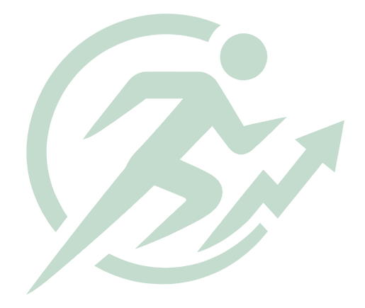

♨Calorias consumidas
0 kcalMeta demonstrativa: 2.000 kcal
 TTFITTIME TO FITNESSEntrar
TTFITTIME TO FITNESSEntrarSEU RITMO. SUA EVOLUÇÃO.
Acompanhe alimentação, calorias e macronutrientes. Registre seus hábitos e veja sua evolução acontecer.
Registrar alimentação ↗
RESUMO DE HOJE
Meta demonstrativa: 2.000 kcal
Recuperação e construção muscular
Energia para o dia
Parte de uma alimentação equilibrada
DIÁRIO ALIMENTAR
Selecione um alimento e informe a porção consumida.
ANÁLISE NUTRICIONAL
REGISTROS SALVOS
Carregando registros…
PRÓXIMAS ENTREGAS
Vamos adicionar exercícios, metas e uma API que sugere alimentos por foto. O usuário poderá confirmar alimento e quantidade antes do cálculo.
EM DESENVOLVIMENTO